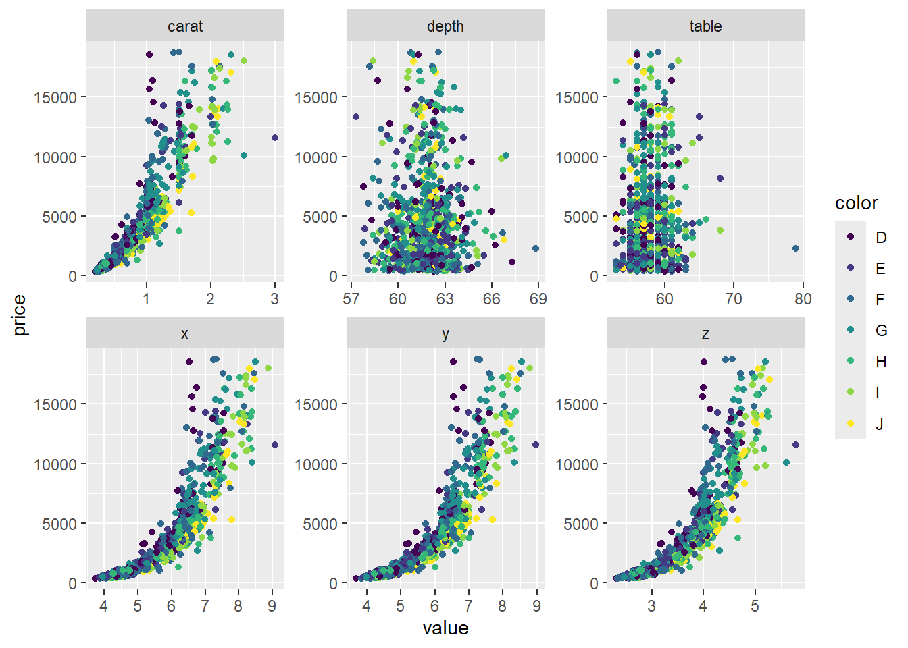
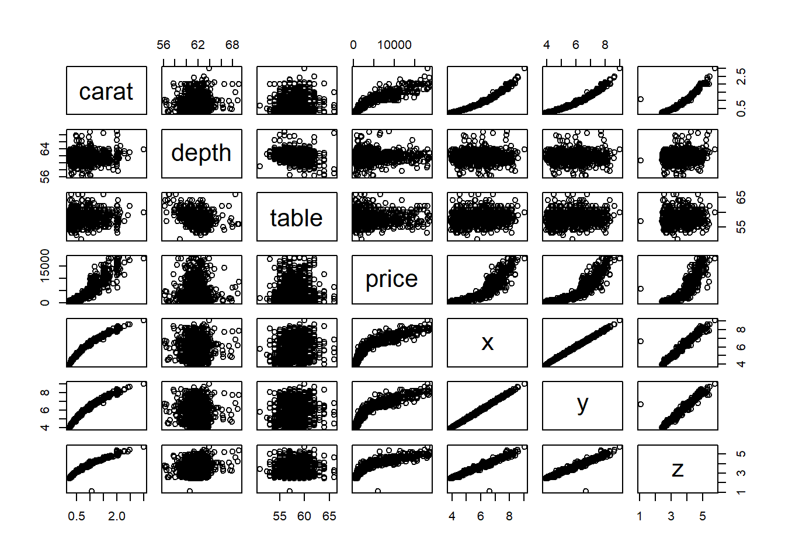
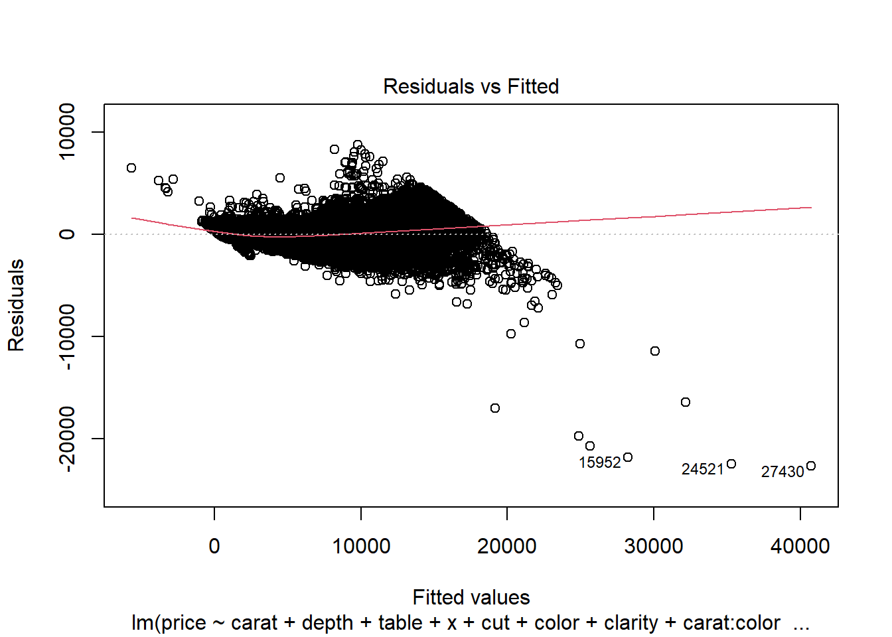
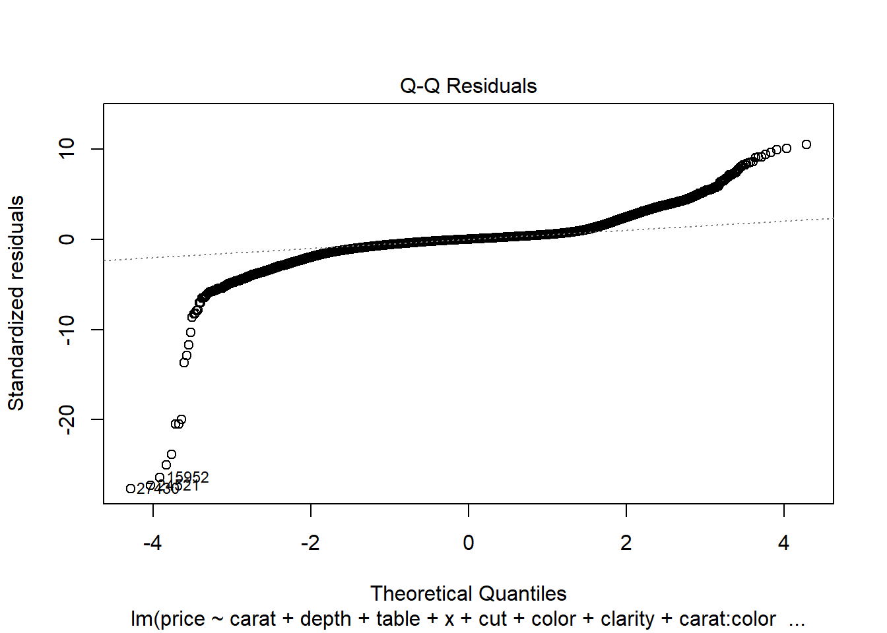
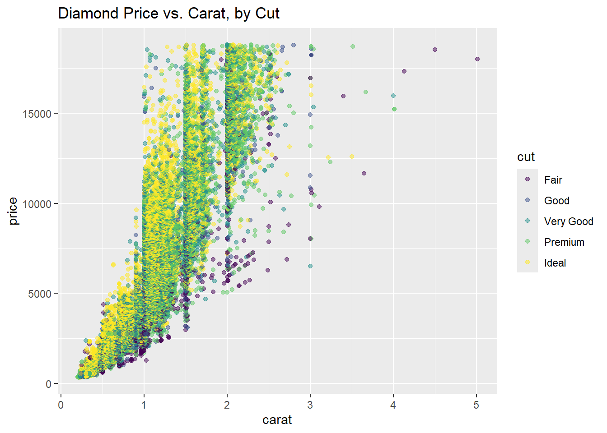

Lesson 25 - Multiple Linear Regression II
Lesson Administration
Calendar
Day 1

Day 2


SIL 2 Points
Milestone 5
- Lesson 25.5
- Change: 9 November 2359
- Milestone 5 Instructions
Exploration Exercise 4.4
- Lesson 26
- 12-13 November
- Link: TBD
Milestone 6: Draft Tech Report
- Lesson 26.5
- 17 November
- Milestone 6 Instructions
Project Presentations
- Need to know who will not be here on presentation day because of CPRC
Milestone 7
Milestone 8
TEE Times
| Date | Start | End |
|---|---|---|
| Wed, 17 Dec 2025 | 1300 | 1630 |
| Thu, 18 Dec 2025 | 0730 | 1100 |
DMath Basketball!!
Math 1 vs…
Previously 0-0
1-0

Cal
Reese
I got nothing… So enjoy these
Multiple Linear Regression
A Reminder
Remember this from last class?
mod1 <- lm(formula = mpg ~ wt + as.factor(cyl), data = mtcars)
summary(mod1)
Call:
lm(formula = mpg ~ wt + as.factor(cyl), data = mtcars)
Residuals:
Min 1Q Median 3Q Max
-4.5890 -1.2357 -0.5159 1.3845 5.7915
Coefficients:
Estimate Std. Error t value Pr(>|t|)
(Intercept) 33.9908 1.8878 18.006 < 2e-16 ***
wt -3.2056 0.7539 -4.252 0.000213 ***
as.factor(cyl)6 -4.2556 1.3861 -3.070 0.004718 **
as.factor(cyl)8 -6.0709 1.6523 -3.674 0.000999 ***
---
Signif. codes: 0 '***' 0.001 '**' 0.01 '*' 0.05 '.' 0.1 ' ' 1
Residual standard error: 2.557 on 28 degrees of freedom
Multiple R-squared: 0.8374, Adjusted R-squared: 0.82
F-statistic: 48.08 on 3 and 28 DF, p-value: 3.594e-11The fitted regression equation is:
\[ \widehat{mpg} = 33.99 - 3.21(\text{wt}) - 4.26(\text{cyl6}) - 6.07(\text{cyl8}) \]
To predict fuel efficiency for a 3000-lb, 6-cylinder car:
\[ \begin{aligned} \widehat{mpg} &= 33.99 - 3.21(3.0) - 4.26(1) - 6.07(0) \\[6pt] &= 33.99 - 9.63 - 4.26 \\[6pt] &= 20.10 \end{aligned} \]
So the model predicts:
\[ \boxed{\widehat{mpg} = 20.1} \]
Interactions
mod2 <- lm(formula = mpg ~ wt + as.factor(cyl) + hp + hp:as.factor(cyl), data = mtcars)
summary(mod2)
Call:
lm(formula = mpg ~ wt + as.factor(cyl) + hp + hp:as.factor(cyl),
data = mtcars)
Residuals:
Min 1Q Median 3Q Max
-3.1864 -1.4098 -0.4022 1.0186 4.3920
Coefficients:
Estimate Std. Error t value Pr(>|t|)
(Intercept) 41.87732 3.23293 12.953 1.37e-12 ***
wt -3.05994 0.68275 -4.482 0.000143 ***
as.factor(cyl)6 -9.98213 5.76950 -1.730 0.095931 .
as.factor(cyl)8 -11.72793 4.22507 -2.776 0.010276 *
hp -0.09947 0.03487 -2.853 0.008576 **
as.factor(cyl)6:hp 0.07809 0.05236 1.492 0.148335
as.factor(cyl)8:hp 0.08602 0.03703 2.323 0.028601 *
---
Signif. codes: 0 '***' 0.001 '**' 0.01 '*' 0.05 '.' 0.1 ' ' 1
Residual standard error: 2.3 on 25 degrees of freedom
Multiple R-squared: 0.8826, Adjusted R-squared: 0.8544
F-statistic: 31.32 on 6 and 25 DF, p-value: 1.831e-10We can write the fitted model as
\[ \begin{aligned} \widehat{mpg} &= 41.877 - 3.060\,(\text{wt}) - 9.982\,(\text{cyl6}) - 11.728\,(\text{cyl8}) - 0.09947\,(\text{hp}) + 0.07809\,(\text{hp}\times \text{cyl6}) + 0.08602\,(\text{hp}\times \text{cyl8}) \end{aligned} \]
Comparing Models
Which one is better?
Lets turn to \(R^2\)
Model 1: .8374
Model 2: .8826
Validity Conditions
Linearity — the relationship between predictors and the response is roughly linear
Independence — observations are independent of each other
Normal Distribution — residuals are approximately normal
Equal Variance — variability of residuals is consistent across fitted values
Linearity
Check whether the relationship between predictors and the response is roughly linear.
Use a residuals vs fitted plot — you want to see a random scatter (no pattern).
plot(mod1, which = 1)
Independence
We can’t test this from the model alone — it depends on how the data were collected.
You must verify that each observation is independent (e.g., different cars, people, or trials).
Normal Distribution
Check whether residuals are approximately normally distributed using a Q-Q plot.
plot(mod1, which = 2)
Equal Variance
Check for constant variance (homoscedasticity) — residuals should have similar spread across fitted values.
plot(mod1, which = 1)
Adventure One - Example of what to do for Milestone 5
library(tidyverse)
data("diamonds")
diamonds |>
sample_n(size = 1000) |>
pivot_longer(cols = -c(cut, clarity, price, color)) |>
ggplot(aes(x = value, y = price, colour = color)) +
geom_point() +
facet_wrap(~name, scales = "free")
mod1 <- lm(formula = price ~ carat + depth + table + x + y + z + cut + color + clarity, data = diamonds)
summary(mod1)
Call:
lm(formula = price ~ carat + depth + table + x + y + z + cut +
color + clarity, data = diamonds)
Residuals:
Min 1Q Median 3Q Max
-21376.0 -592.4 -183.5 376.4 10694.2
Coefficients:
Estimate Std. Error t value Pr(>|t|)
(Intercept) 5753.762 396.630 14.507 < 2e-16 ***
carat 11256.978 48.628 231.494 < 2e-16 ***
depth -63.806 4.535 -14.071 < 2e-16 ***
table -26.474 2.912 -9.092 < 2e-16 ***
x -1008.261 32.898 -30.648 < 2e-16 ***
y 9.609 19.333 0.497 0.61918
z -50.119 33.486 -1.497 0.13448
cut.L 584.457 22.478 26.001 < 2e-16 ***
cut.Q -301.908 17.994 -16.778 < 2e-16 ***
cut.C 148.035 15.483 9.561 < 2e-16 ***
cut^4 -20.794 12.377 -1.680 0.09294 .
color.L -1952.160 17.342 -112.570 < 2e-16 ***
color.Q -672.054 15.777 -42.597 < 2e-16 ***
color.C -165.283 14.725 -11.225 < 2e-16 ***
color^4 38.195 13.527 2.824 0.00475 **
color^5 -95.793 12.776 -7.498 6.59e-14 ***
color^6 -48.466 11.614 -4.173 3.01e-05 ***
clarity.L 4097.431 30.259 135.414 < 2e-16 ***
clarity.Q -1925.004 28.227 -68.197 < 2e-16 ***
clarity.C 982.205 24.152 40.668 < 2e-16 ***
clarity^4 -364.918 19.285 -18.922 < 2e-16 ***
clarity^5 233.563 15.752 14.828 < 2e-16 ***
clarity^6 6.883 13.715 0.502 0.61575
clarity^7 90.640 12.103 7.489 7.06e-14 ***
---
Signif. codes: 0 '***' 0.001 '**' 0.01 '*' 0.05 '.' 0.1 ' ' 1
Residual standard error: 1130 on 53916 degrees of freedom
Multiple R-squared: 0.9198, Adjusted R-squared: 0.9198
F-statistic: 2.688e+04 on 23 and 53916 DF, p-value: < 2.2e-16mod2 <- lm(formula = price ~ carat + depth + table + x + z + cut + color + clarity, data = diamonds)
summary(mod2)
Call:
lm(formula = price ~ carat + depth + table + x + z + cut + color +
clarity, data = diamonds)
Residuals:
Min 1Q Median 3Q Max
-21378.8 -592.5 -183.5 376.3 10694.1
Coefficients:
Estimate Std. Error t value Pr(>|t|)
(Intercept) 5768.782 395.474 14.587 < 2e-16 ***
carat 11257.752 48.602 231.630 < 2e-16 ***
depth -64.003 4.517 -14.168 < 2e-16 ***
table -26.501 2.911 -9.103 < 2e-16 ***
x -1000.354 28.795 -34.740 < 2e-16 ***
z -47.925 33.194 -1.444 0.14880
cut.L 584.600 22.476 26.010 < 2e-16 ***
cut.Q -302.211 17.983 -16.805 < 2e-16 ***
cut.C 148.446 15.461 9.601 < 2e-16 ***
cut^4 -20.619 12.371 -1.667 0.09559 .
color.L -1952.179 17.342 -112.572 < 2e-16 ***
color.Q -672.075 15.777 -42.599 < 2e-16 ***
color.C -165.277 14.725 -11.224 < 2e-16 ***
color^4 38.193 13.526 2.824 0.00475 **
color^5 -95.780 12.776 -7.497 6.64e-14 ***
color^6 -48.452 11.614 -4.172 3.02e-05 ***
clarity.L 4097.613 30.256 135.431 < 2e-16 ***
clarity.Q -1925.133 28.226 -68.205 < 2e-16 ***
clarity.C 982.322 24.150 40.676 < 2e-16 ***
clarity^4 -364.976 19.285 -18.926 < 2e-16 ***
clarity^5 233.635 15.751 14.833 < 2e-16 ***
clarity^6 6.871 13.715 0.501 0.61640
clarity^7 90.622 12.103 7.487 7.13e-14 ***
---
Signif. codes: 0 '***' 0.001 '**' 0.01 '*' 0.05 '.' 0.1 ' ' 1
Residual standard error: 1130 on 53917 degrees of freedom
Multiple R-squared: 0.9198, Adjusted R-squared: 0.9198
F-statistic: 2.81e+04 on 22 and 53917 DF, p-value: < 2.2e-16## Candidate model
mod3 <- lm(formula = price ~ carat + depth + table + x + cut + color + clarity, data = diamonds)
summary(mod3)
Call:
lm(formula = price ~ carat + depth + table + x + cut + color +
clarity, data = diamonds)
Residuals:
Min 1Q Median 3Q Max
-21385.0 -592.4 -183.7 376.5 10694.6
Coefficients:
Estimate Std. Error t value Pr(>|t|)
(Intercept) 5935.107 378.328 15.688 < 2e-16 ***
carat 11256.968 48.600 231.626 < 2e-16 ***
depth -66.769 4.091 -16.322 < 2e-16 ***
table -26.457 2.911 -9.089 < 2e-16 ***
x -1029.478 20.549 -50.098 < 2e-16 ***
cut.L 584.717 22.476 26.015 < 2e-16 ***
cut.Q -302.037 17.983 -16.795 < 2e-16 ***
cut.C 148.065 15.459 9.578 < 2e-16 ***
cut^4 -21.253 12.364 -1.719 0.08562 .
color.L -1952.128 17.342 -112.568 < 2e-16 ***
color.Q -672.207 15.777 -42.608 < 2e-16 ***
color.C -165.451 14.724 -11.236 < 2e-16 ***
color^4 38.261 13.526 2.829 0.00468 **
color^5 -95.816 12.776 -7.500 6.50e-14 ***
color^6 -48.441 11.614 -4.171 3.04e-05 ***
clarity.L 4096.912 30.253 135.423 < 2e-16 ***
clarity.Q -1924.681 28.224 -68.192 < 2e-16 ***
clarity.C 982.004 24.149 40.664 < 2e-16 ***
clarity^4 -364.870 19.285 -18.920 < 2e-16 ***
clarity^5 233.449 15.751 14.822 < 2e-16 ***
clarity^6 6.973 13.715 0.508 0.61114
clarity^7 90.738 12.103 7.497 6.63e-14 ***
---
Signif. codes: 0 '***' 0.001 '**' 0.01 '*' 0.05 '.' 0.1 ' ' 1
Residual standard error: 1130 on 53918 degrees of freedom
Multiple R-squared: 0.9198, Adjusted R-squared: 0.9198
F-statistic: 2.944e+04 on 21 and 53918 DF, p-value: < 2.2e-16diamonds |>
select(-c(cut, color, clarity)) |>
sample_n(1000) |>
pairs()
mod4 <- lm(formula = price ~ carat + depth + table + x + cut + color + clarity + carat:color, data = diamonds)
summary(mod4)
Call:
lm(formula = price ~ carat + depth + table + x + cut + color +
clarity + carat:color, data = diamonds)
Residuals:
Min 1Q Median 3Q Max
-16732.9 -513.8 -136.6 358.5 10550.5
Coefficients:
Estimate Std. Error t value Pr(>|t|)
(Intercept) 10393.339 359.347 28.923 < 2e-16 ***
carat 12646.011 49.034 257.900 < 2e-16 ***
depth -97.355 3.860 -25.223 < 2e-16 ***
table -28.297 2.735 -10.348 < 2e-16 ***
x -1624.864 20.623 -78.791 < 2e-16 ***
cut.L 594.594 21.114 28.161 < 2e-16 ***
cut.Q -274.247 16.896 -16.232 < 2e-16 ***
cut.C 132.434 14.523 9.119 < 2e-16 ***
cut^4 -12.347 11.613 -1.063 0.28770
color.L 329.781 34.252 9.628 < 2e-16 ***
color.Q 513.842 31.643 16.239 < 2e-16 ***
color.C -119.817 29.087 -4.119 3.81e-05 ***
color^4 69.759 26.171 2.665 0.00769 **
color^5 250.440 24.647 10.161 < 2e-16 ***
color^6 125.580 22.195 5.658 1.54e-08 ***
clarity.L 4113.880 28.459 144.556 < 2e-16 ***
clarity.Q -1981.152 26.554 -74.607 < 2e-16 ***
clarity.C 991.093 22.698 43.665 < 2e-16 ***
clarity^4 -353.021 18.117 -19.485 < 2e-16 ***
clarity^5 208.673 14.801 14.099 < 2e-16 ***
clarity^6 26.858 12.884 2.085 0.03711 *
clarity^7 107.303 11.372 9.436 < 2e-16 ***
carat:color.L -2454.649 34.150 -71.878 < 2e-16 ***
carat:color.Q -1020.521 31.031 -32.887 < 2e-16 ***
carat:color.C 212.081 29.261 7.248 4.29e-13 ***
carat:color^4 19.164 27.152 0.706 0.48031
carat:color^5 -396.193 26.071 -15.196 < 2e-16 ***
carat:color^6 -192.062 24.204 -7.935 2.14e-15 ***
---
Signif. codes: 0 '***' 0.001 '**' 0.01 '*' 0.05 '.' 0.1 ' ' 1
Residual standard error: 1061 on 53912 degrees of freedom
Multiple R-squared: 0.9293, Adjusted R-squared: 0.9292
F-statistic: 2.623e+04 on 27 and 53912 DF, p-value: < 2.2e-16## Candidate model
mod5 <- lm(formula = price ~ carat + depth + table + x + cut + color + clarity + carat:color + clarity:carat, data = diamonds)
summary(mod5)
Call:
lm(formula = price ~ carat + depth + table + x + cut + color +
clarity + carat:color + clarity:carat, data = diamonds)
Residuals:
Min 1Q Median 3Q Max
-22707.3 -301.6 -0.9 271.9 8784.4
Coefficients:
Estimate Std. Error t value Pr(>|t|)
(Intercept) 21244.877 290.112 73.230 < 2e-16 ***
carat 16453.723 45.710 359.960 < 2e-16 ***
depth -163.331 3.068 -53.232 < 2e-16 ***
table -39.541 2.158 -18.324 < 2e-16 ***
x -3095.798 18.360 -168.620 < 2e-16 ***
cut.L 514.155 16.659 30.863 < 2e-16 ***
cut.Q -163.316 13.343 -12.239 < 2e-16 ***
cut.C 71.287 11.459 6.221 4.98e-10 ***
cut^4 7.700 9.160 0.841 0.40059
color.L 667.031 27.200 24.523 < 2e-16 ***
color.Q 367.411 25.005 14.694 < 2e-16 ***
color.C 15.497 22.987 0.674 0.50022
color^4 104.494 20.654 5.059 4.22e-07 ***
color^5 200.370 19.445 10.305 < 2e-16 ***
color^6 24.333 17.523 1.389 0.16495
clarity.L -3011.134 48.745 -61.774 < 2e-16 ***
clarity.Q 1767.264 44.991 39.280 < 2e-16 ***
clarity.C -1411.691 37.984 -37.166 < 2e-16 ***
clarity^4 863.630 30.089 28.703 < 2e-16 ***
clarity^5 -454.165 24.029 -18.901 < 2e-16 ***
clarity^6 112.514 20.512 5.485 4.15e-08 ***
clarity^7 -91.019 17.879 -5.091 3.58e-07 ***
carat:color.L -2936.145 27.224 -107.853 < 2e-16 ***
carat:color.Q -861.382 24.531 -35.114 < 2e-16 ***
carat:color.C 33.212 23.141 1.435 0.15124
carat:color^4 -64.953 21.442 -3.029 0.00245 **
carat:color^5 -293.108 20.575 -14.246 < 2e-16 ***
carat:color^6 -24.459 19.136 -1.278 0.20119
carat:clarity.L 7881.781 51.240 153.820 < 2e-16 ***
carat:clarity.Q -2165.582 45.783 -47.301 < 2e-16 ***
carat:clarity.C 1714.611 41.112 41.706 < 2e-16 ***
carat:clarity^4 -945.245 36.053 -26.218 < 2e-16 ***
carat:clarity^5 488.264 31.404 15.548 < 2e-16 ***
carat:clarity^6 28.838 27.156 1.062 0.28827
carat:clarity^7 279.667 21.976 12.726 < 2e-16 ***
---
Signif. codes: 0 '***' 0.001 '**' 0.01 '*' 0.05 '.' 0.1 ' ' 1
Residual standard error: 837 on 53905 degrees of freedom
Multiple R-squared: 0.956, Adjusted R-squared: 0.956
F-statistic: 3.445e+04 on 34 and 53905 DF, p-value: < 2.2e-16#Linear
plot(mod5, which = 1)
#Inedpendence
# N
plot(mod5, which = 2)
#E
plot(mod5, which = 1)
In Class Exercise - Adventure Two - Will revisit lesson 26
library(tidyverse)
diamonds# A tibble: 53,940 × 10
carat cut color clarity depth table price x y z
<dbl> <ord> <ord> <ord> <dbl> <dbl> <int> <dbl> <dbl> <dbl>
1 0.23 Ideal E SI2 61.5 55 326 3.95 3.98 2.43
2 0.21 Premium E SI1 59.8 61 326 3.89 3.84 2.31
3 0.23 Good E VS1 56.9 65 327 4.05 4.07 2.31
4 0.29 Premium I VS2 62.4 58 334 4.2 4.23 2.63
5 0.31 Good J SI2 63.3 58 335 4.34 4.35 2.75
6 0.24 Very Good J VVS2 62.8 57 336 3.94 3.96 2.48
7 0.24 Very Good I VVS1 62.3 57 336 3.95 3.98 2.47
8 0.26 Very Good H SI1 61.9 55 337 4.07 4.11 2.53
9 0.22 Fair E VS2 65.1 61 337 3.87 3.78 2.49
10 0.23 Very Good H VS1 59.4 61 338 4 4.05 2.39
# ℹ 53,930 more rowsIn addition to carat size, what other variables might be associated with the price of a diamond?
Create a comparative box plot of
price(response variable on the y-axis) bycut(explanatory variable on the x-axis).
Which cut category tends to have higher prices? Is this what you would expect?Fit a simple linear model for
priceusingcaratas the explanatory variable andpriceas the response variable.
- Write out the regression equation with intercept, coefficients, and variable names.
- Interpret the coefficient of
caratin the context of this model.
- What is the strength of evidence that
caratis related toprice?
Create a scatterplot of
priceversuscarat, colored bycut.
Do higher-quality cuts tend to cluster at different price or carat ranges?
How might this influence your interpretation of the relationship between carat and price?Fit a multiple regression model for
priceusing bothcaratandcutas explanatory variables.
- Write out the regression equation with intercept, coefficients, and variable names.
- Interpret the coefficient for
cutwhile controlling forcarat.
How much total variation in diamond price is explained by this model (i.e., (R^2))?
The model in #5 assumes that the effect of
caratonpriceis the same across all cuts.
How can we check whether this assumption is valid?Fit a multiple regression model for
priceusing bothcaratandcut, including an interaction between them.
Write out the regression equation with intercept, coefficients, and variable names.Among the Ideal cut diamonds, how much does price increase for a one-unit increase in carat?
Among the Fair cut diamonds, how much does price increase for a one-unit increase in carat?
Is the interaction between
caratandcutstatistically significant?
State your null and alternative hypotheses for the interaction term and report the test statistic and p-value.To what population are you willing to generalize your results?
Can you draw a cause-and-effect conclusion about carat size and diamond price? Why or why not?
Partial Solution
Ask a Research Question
- In addition to carat size, what other variables might be associated with the price of a diamond?
Design a Study and Explore the Data
The diamonds dataset in R contains information about 53,940 diamonds, including their price (in U.S. dollars), carat, cut, color, clarity, and several physical measurements (x, y, z, depth, table).
We’ll examine how carat size and quality characteristics relate to diamond price.
- Use R to create a comparative box plot of
price(Response Variable on the y-axis) bycut(Explanatory Variable on the x-axis).- Which cut category tends to have higher prices?
- Is this what you would expect?
- Which cut category tends to have higher prices?
ggplot(diamonds, aes(x = cut, y = price)) +
geom_boxplot() +
labs(title = "Diamond Price by Cut Quality")
- Create a simple linear model for
priceusingcaratas the Explanatory Variable andpriceas the Response Variable.
mod1 <- lm(price ~ carat, data = diamonds)
summary(mod1)
Call:
lm(formula = price ~ carat, data = diamonds)
Residuals:
Min 1Q Median 3Q Max
-18585.3 -804.8 -18.9 537.4 12731.7
Coefficients:
Estimate Std. Error t value Pr(>|t|)
(Intercept) -2256.36 13.06 -172.8 <2e-16 ***
carat 7756.43 14.07 551.4 <2e-16 ***
---
Signif. codes: 0 '***' 0.001 '**' 0.01 '*' 0.05 '.' 0.1 ' ' 1
Residual standard error: 1549 on 53938 degrees of freedom
Multiple R-squared: 0.8493, Adjusted R-squared: 0.8493
F-statistic: 3.041e+05 on 1 and 53938 DF, p-value: < 2.2e-16- Write out the simple linear regression equation with intercept, coefficients, and variable names.
\[ \widehat{price} = b_0 + b_1(\text{carat}) \]
- Interpret the coefficient of carat in the context of this model.
- Based on the p-value for the slope, what is the strength of evidence that
caratis related toprice?
- Generate a scatterplot of
price(y-axis) versuscarat(x-axis), colored bycut.
ggplot(diamonds, aes(x = carat, y = price, color = cut)) +
geom_point(alpha = 0.5) +
labs(title = "Diamond Price vs. Carat, by Cut")
- Do higher-quality cuts tend to cluster at different price or carat ranges?
- How might this influence your interpretation of the relationship between carat and price?
- Fit a multiple regression model for
priceusing bothcaratandcutas Explanatory Variables.
mod2 <- lm(price ~ carat + cut, data = diamonds)
summary(mod2)
Call:
lm(formula = price ~ carat + cut, data = diamonds)
Residuals:
Min 1Q Median 3Q Max
-17540.7 -791.6 -37.6 522.1 12721.4
Coefficients:
Estimate Std. Error t value Pr(>|t|)
(Intercept) -2701.38 15.43 -175.061 < 2e-16 ***
carat 7871.08 13.98 563.040 < 2e-16 ***
cut.L 1239.80 26.10 47.502 < 2e-16 ***
cut.Q -528.60 23.13 -22.851 < 2e-16 ***
cut.C 367.91 20.21 18.201 < 2e-16 ***
cut^4 74.59 16.24 4.593 4.37e-06 ***
---
Signif. codes: 0 '***' 0.001 '**' 0.01 '*' 0.05 '.' 0.1 ' ' 1
Residual standard error: 1511 on 53934 degrees of freedom
Multiple R-squared: 0.8565, Adjusted R-squared: 0.8565
F-statistic: 6.437e+04 on 5 and 53934 DF, p-value: < 2.2e-16- Write out the multiple regression equation with intercept, coefficients, and variable names.
- Interpret the coefficient for
cutwhile controlling forcarat.
How much total variation in diamond price is explained by this model (i.e., (R^2))?
This model assumes that the effect of carat on price is the same across all cuts.
- How can we check whether this assumption is valid?
Create a multiple regression model for
priceusing bothcaratandcut, including an interaction between them.
mod3 <- lm(price ~ carat * cut, data = diamonds)
summary(mod3)
Call:
lm(formula = price ~ carat * cut, data = diamonds)
Residuals:
Min 1Q Median 3Q Max
-14878.3 -793.0 -23.0 546.3 12706.2
Coefficients:
Estimate Std. Error t value Pr(>|t|)
(Intercept) -2271.95 20.94 -108.513 < 2e-16 ***
carat 7468.05 19.49 383.200 < 2e-16 ***
cut.L -278.21 57.17 -4.866 1.14e-06 ***
cut.Q 363.22 50.51 7.191 6.50e-13 ***
cut.C -172.96 42.81 -4.041 5.34e-05 ***
cut^4 67.55 33.40 2.022 0.0431 *
carat:cut.L 1538.10 50.96 30.183 < 2e-16 ***
carat:cut.Q -781.89 45.89 -17.037 < 2e-16 ***
carat:cut.C 509.65 41.36 12.321 < 2e-16 ***
carat:cut^4 69.70 34.38 2.027 0.0426 *
---
Signif. codes: 0 '***' 0.001 '**' 0.01 '*' 0.05 '.' 0.1 ' ' 1
Residual standard error: 1498 on 53930 degrees of freedom
Multiple R-squared: 0.8591, Adjusted R-squared: 0.859
F-statistic: 3.653e+04 on 9 and 53930 DF, p-value: < 2.2e-16Write out the regression equation with intercept, coefficients, and variable names.
\[ \widehat{price} = b_0 + b_1(\text{carat}) + b_2(\text{cut}) + b_3(\text{carat} \times \text{cut}) \]
Among the Ideal cut diamonds, how much does price increase for a one-unit increase in carat?
Among the Fair cut diamonds, how much does price increase for a one-unit increase in carat?
Is the interaction between
caratandcutstatistically significant?- State your null and alternative hypotheses for the interaction term.
- Report the test statistic and p-value.
- State your null and alternative hypotheses for the interaction term.
To what population are you willing to generalize your results?
- Can you draw a cause-and-effect conclusion about carat size and diamond price?
- Why or why not?
- Can you draw a cause-and-effect conclusion about carat size and diamond price?
Check each of the four Validity Conditions for the multiple regression you ran in #8.
- Include all three validity plots for your regression model.
- Justify each of the four conditions: Linearity, Independence, Normality, and Equal Variance.
- Include all three validity plots for your regression model.
Linearity
plot(mod3, which = 1)
Independence
Must be justified based on data collection (not tested statistically).
Normal Distribution
plot(mod3, which = 2)
Equal Variance
plot(mod3, which = 1)
Before you leave
Today:
- Any questions for me?